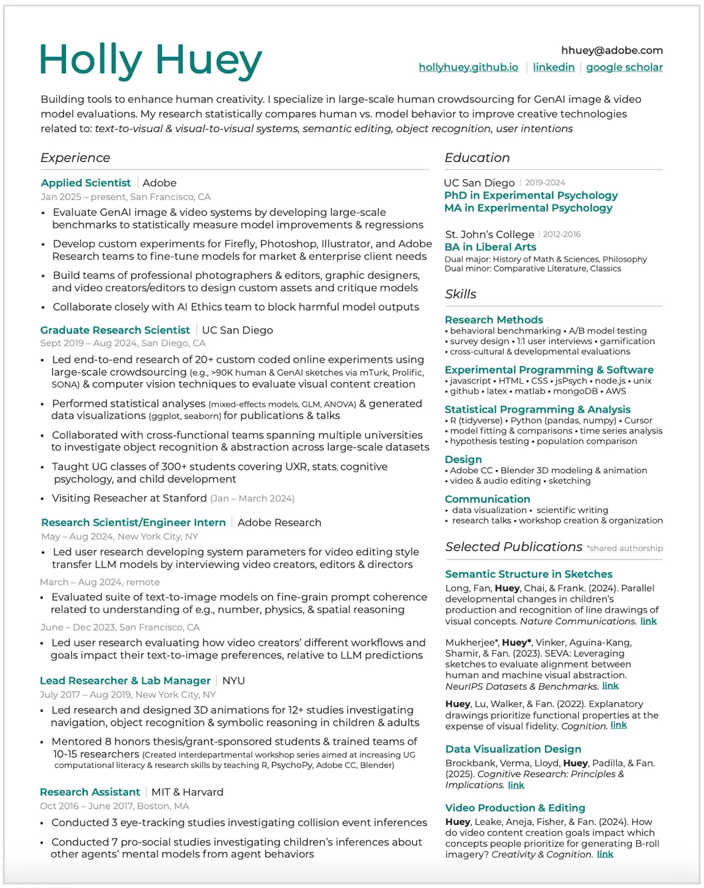
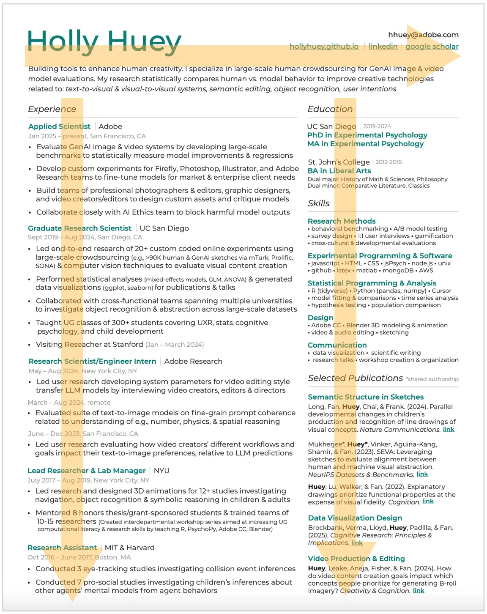

🔥 The Undergrad Mentees have told me before that my personal resume is anti-ATS. So consider the following advice as a hot take.
Applicant tracking systems (ATS) use algorithms to filter applications by searching for keywords. To make resumes machine-readable, ATS optimization recommends using:
- 1-column format
- black and white fonts
- keywords & exact phrases from the job description
ATS-optimized resumes are hard for humans to read
As you’ve probably picked up by now, my main job hunting advice is not to apply to the black hole of cold applications. I do have friends who have landed jobs that way (woot!!), but I never have. So MY feedback is heavily biased towards networking.
There are 3 main strategies behind making your resume human-readable:
- You will often be asked for your resume when networking with other humans.
- This is the moment that people will assess your competence and (potentially) offer a referral, connect you with another connection by forwarding your email, or
- This is the split moment that people will assess that you are not a good fit or do not understand industry standards (e.g., early career resumes that are longer than 1 page. I highly recommend making a standard resume. You can keep your academic cv but at least make both versions available.)
- Your resume should be easily discoverable on your personal website1 and will read by humans, not ATS.
- Even if your resume passes ATS, your resume will ultimately be read by the hiring manager and teammates who will interview you.
My resume example
I’ll use my personal resume (last updated 10/2025) as a concrete example, but please know that I am still iterating on it. I tend to update it once a year.

Note that my resume uses (1) a 2-column format with a header; and (2) uses color. I also use keywords that are relevant to the industry & specific roles that I am interested in, but don’t overly focus on exact phrases from a job description.
It’s very obvious when people copy exact phrases from job descriptions. Also, now that I’m on the other side, I’ve realized that job posts are often hacked together extremely last minute just to get it online and are often written by ChatGPT. This means that the job description is not as crafted as you’d think. If it’s (unintentionally) vaguely written by AI, your copy-pasted phrases will also be vague. If it’s intentionally vague because the role is meant to expand in scope and the job description is merely a starting place, again your copy-pasted phrases will also be vague.
Here are the goals that I aim to achieve in my resume:
#1 Visually guide your reader through your resume
Everyone skims resumes. I believe that people visually skim the edges of a resume. I have no visuoperceptual citations to back this statement, but here’s what I do to leverage this:
- A header naturally takes advantage of people automatically searching for your name at the beginning of their skim. (More on the header later.)
- A 2-column format takes advantage of people skimming the right edge of your resume and guides them through what you want them to extract. I personally believe the 1-column format is lost “visual real estate”.
- Different text color, font sizes, and font weight (bold) tells people what you want them to
take away and remember from your resume
- Don’t use more than 1 color other than black. Yes, I am breaking my own rule by also using gray. But my logic is that I don’t care about people knowing when I did a job or where, so reducing the opacity and size helps people focus on other things.

#2 Translate your background, skill set, and publications
What’s the most important thing that you want people to take away from your resume? When I applied to grad school, my resume/cv highlighted the academic institutions at which I had conducted research and PI names. I’ve now adapted my resume to better align with terms & job titles that industry folks will recognize.
Experience titles
Today, my goal is to highlight my experience & expertise. Notice how I’ve made the academic institutions closer to the middle of the resume, because they are now less important to me to showcase. And I’ve moved my job titles to the far left (where people will visually skim this edge) and highlighted them in bold green.
It also goes without saying that the PhD is professional experience. Don’t only include it as a degree in your education section.
Skills
No one will read a list of skills, but you do want to show that can you translate your current research skills into industry standard terms. Group your skills under categories that you want people to remember. For example, I want people to remember that I have “research” skills. Also “design” skills because I work at Adobe.
In other versions of my resume, I’ve grouped my skills as “quantitative” vs. “qualitative”. When I was applying to grad school, I grouped by skills like “stimuli creation”, “custom web design”, “visual perception tools”, etc.
Publications
Showing selected publications can showcase that you can “ship products”, i.e., ensure that you can complete projects and make them public to others. But no one reads the full title of your publications (I know, I know, this pains me too) or will go through the effort of understanding how it relates to your target job.
Group your publications into semantically meaningful categories. For me, I am highlighting the visual modalities that I have specialized in: “semantic structure of sketches”, “data visualization design”, and “video production & editing”.
Grants
I don’t recommend including a section on grants. If you do, consider adding it to the body of your experience section. You can show financial outcomes this way, but no one outside of academia will recognize the prestige of your grant or understand how to recognize if the dollar amount is big or small as a personal academic grant.
#3 Make your narrative clear and obvious
Consider using a header
Ensure that your reader knows exact who you are when reading your resume. I obviously don’t mean merely your name. I mean, how you characterize yourself and skillset for your target industry. People often describe their years of experience, but I would recommend highlighting your domain expertise & methods specialization.
Be selective about your experiences
Pick & choose the experiences that best highlight your expertise and role/team/company fit. That means (imo) it’s ok to have gaps in your employment. The goal is not to show history, but expertise.
See Your Resume, LinkedIn, and your personal website. You need all 3. for how the goal of your resume differs from the goals of your LinkedIn & personal website.
About tailoring your resume
It’s worth it to put in the work. But you only need to tailor specific aspects of it: your header, skills, category titles, and specific aspects of your professional experience/swap out specific experiences.
The common advice is to make a “master resume”. But I’ve also found that if you’re regularly applying to the same kinds of jobs, you’ll end up naturally generating a subset of master resumes for each role type that you are commonly applying to, e.g., UXR resume, Applied Scientist, Data Scientist, Product Manager, etc. If you do this, then you only need to tailor your header to better align with the specific role or company.
AI was not used to write, edit, or brainstorm this post. All mistakes and em dashes are my own.
- See section Personal Website in Your Resume, LinkedIn, and your personal website. You need all 3. ↩